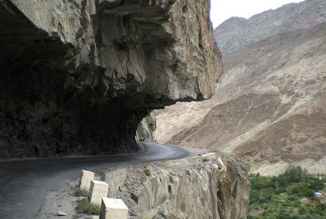

<div class="portfolio-single-load clearfix">
    <div class="custom-full-width-box">
        <div class="custom-container">
            <div class="custom-row align-items-center">
                <div class="custom-image-column">
                    
                </div>
                <div class="custom-text-column">
                    <h2 class="custom-heading">Skardu-Gilgit Road</h2>
                    <p class="custom-paragraph">
                        Stretching for over 167 kilometers through the rugged mountains of Gilgit-Baltistan, the Skardu-Gilgit Road is a scenic highway that offers breathtaking views of snow-capped peaks, lush valleys, and cascading waterfalls. With a population of around 1.5 million people, the road serves as a lifeline for the region, connecting remote villages and towns to major cities and markets. Visitors can Venture on a memorable road trip, stopping at picturesque viewpoints, historic landmarks, and charming villages along the way, to experience the natural beauty and cultural diversity of Gilgit-Baltistan.
                    </p>
                </div>
            </div>
        </div>
    </div><!-- .custom-full-width-box end -->

</div><!-- end single-project -->
